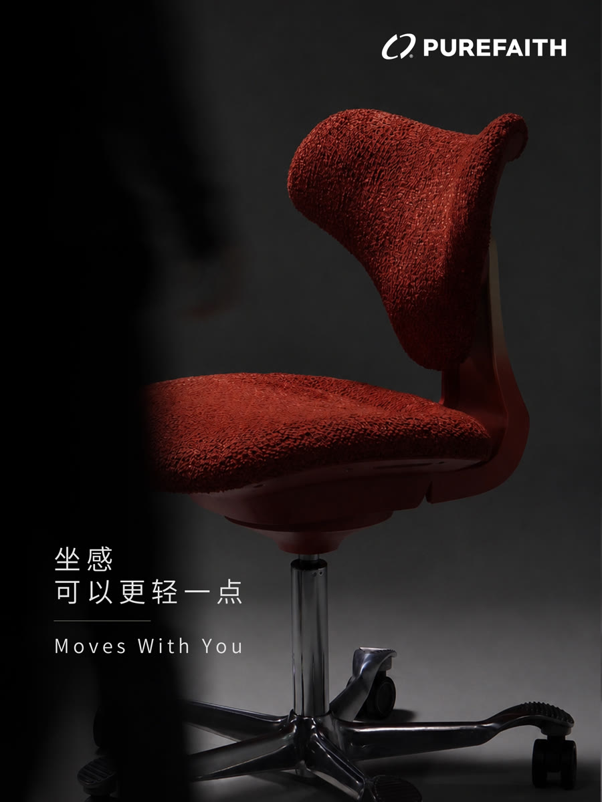
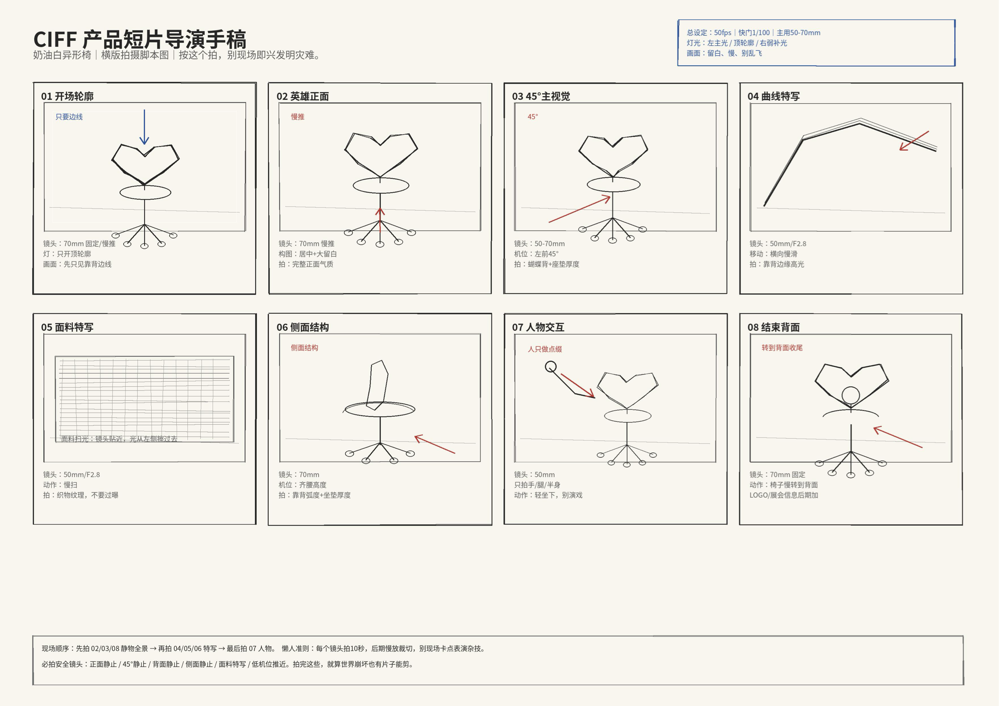

BLACK / MESH / CURVE
让光沿着结构移动
光扫过网布、曲面和支撑结构。平时不易被注意的材质与轮廓，由此成为产品语言。
我的职责卖点拆解 / 灯光与机位 / 实拍 / 剪辑 / 调色
PRODUCT FILM / PUREFAITH
从创始人访谈到暗调棚拍，再到火星上的概念广告。我负责把产品、人物和现场，变成能够被看见、听懂和继续传播的内容。



人物内容 / PEOPLE FIRST
产品影像 / LIGHT & MATERIAL
BLACK / MESH / CURVE
光扫过网布、曲面和支撑结构。平时不易被注意的材质与轮廓，由此成为产品语言。
我的职责卖点拆解 / 灯光与机位 / 实拍 / 剪辑 / 调色
CIFF / P7 RED
围绕红色面料、五星脚和摆动结构，先把镜头与灯光写进导演手稿，再到棚内逐一落地。
个人独立完成导演手稿 / 分镜 / 灯光与机位 / 实拍 / 剪辑 / 调色

AIGC / CONCEPT FILM
AI / 12 POSES
约 20 秒里，人物连续换了 12 种坐姿。变化的是坐下的方式，不变的是始终处在画面中心的椅子。
个人独立完成创意 / 生成与筛选 / 剪辑 / 调色
MARS : 01 / EXPERIMENTAL
产品的设计灵感来自 SpaceX 星舰。于是我把星舰、火箭与火星重新组织，让设计来源变成一条实验性概念广告。
个人独立完成概念 / 生成与筛选 / 剪辑 / 声音设计 / 调色
海外发布后收到询盘反馈